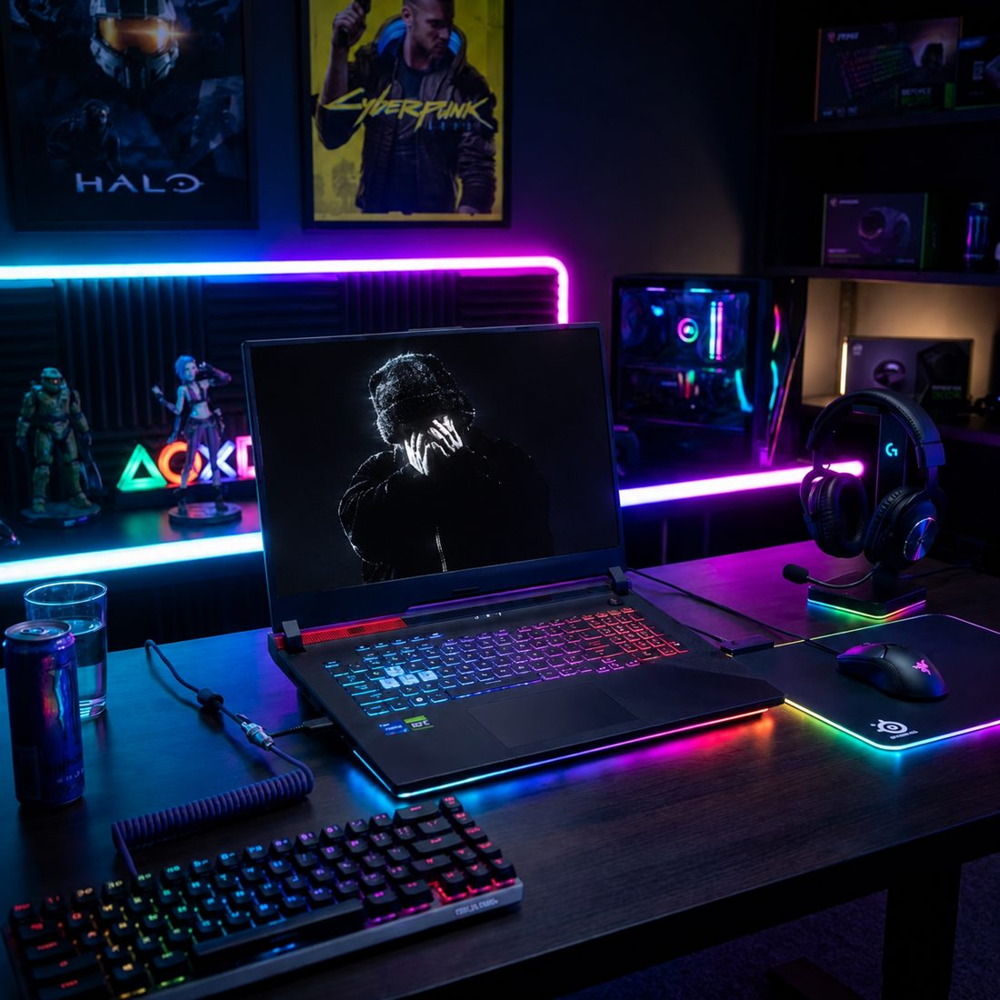

01 / FEATURED
 MIRAGE
MIRAGE
MIRAGE
Ace — MirageThe ace moment
Je suis Tov4r, un gamer passionné par la performance, les jeux et la technologie. Bienvenue sur mon portfolio Gaming !
CLIPPED ON MEDAL
Best moments from TOV4R on Counter-Strike 2. Discover the clips, then watch the full gameplay on Medal.
MIRAGE
 MIRAGE
MIRAGE
 MIRAGE
MIRAGE
 DUST II
DUST II
If the embedded player is unavailable, watch the original on Medal ↗.
TOV4R // COUNTER-STRIKE 2 // SELECTED CLIPS
Practice. Compete. Play with friends.
Community matches & practice
Private and friendly matches
CS2 matchmaking
My suggested starter preset for the TOV4R look. These numbers are ideas to try, not verified settings from my account. Adjust them for your comfort and display.
NOT PROVIDED800 DPI / 1.20 sens / 1280 × 960 are sample starting points I chose, not a claim about the player’s real game. The import-code button stays disabled until an authentic code is supplied.
Try the red-line style and customize the preview freely. It is a visual concept; the lab does not generate a real CS2 share code.
A black-and-red style moodboard I designed for TOV4R. These are creative themes, not owned CS2 items or official game cosmetics.
CT-style stealth moodboard. Not an in-game agent or ownership claim.
Graphite and crimson as a visual theme; not a claimed glove skin.
Based on this site’s own Level Up soundtrack, not a CS2 music kit.
An original TOV4R / 04 graphic concept, not a game badge.
TOV4R // CONCEPT SHOWCASE ONLY // NO CLAIMED GAME INVENTORY


Je m'appelle Tov4r et je suis passionné par l'informatique, les jeux vidéo et le monde du digital. Toujours à la recherche de nouvelles expériences, j'apprends, je progresse et je vise plus grand !